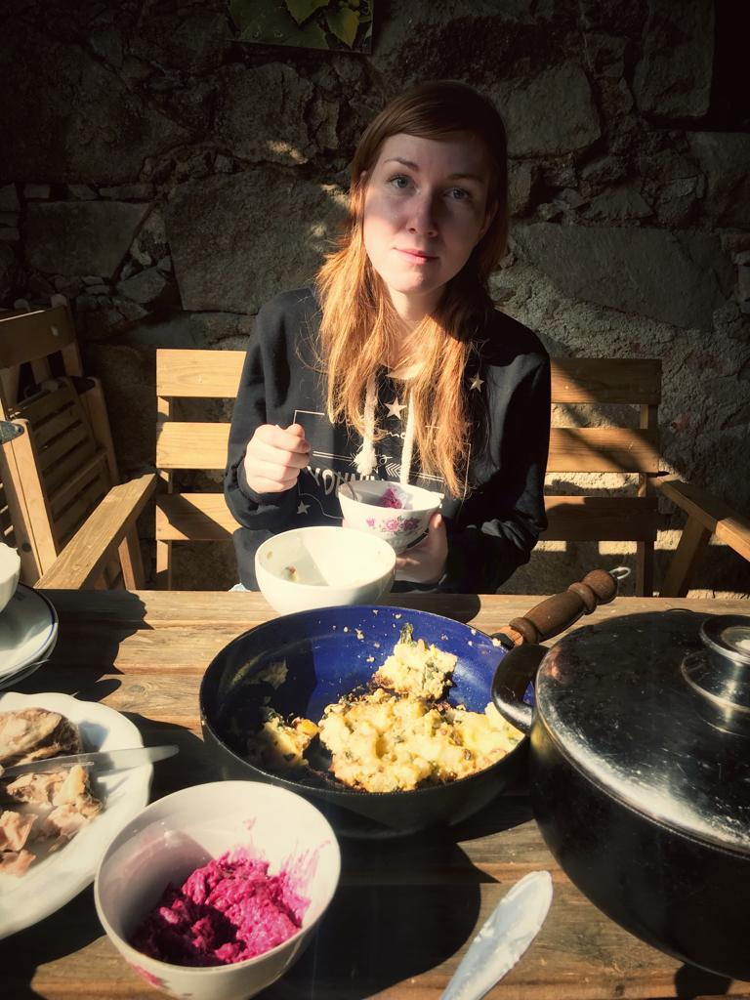

Dovolte mi se představit.
Zde najdete odkaz na můj profil.
Samozřejmě mě můžete kontaktovat i přes můj mail.
Pocházím z malého města v jižních Čechách. Učím na malé škole v ještě menším jihočeském městě. Každé ráno vstanu, připravím si do termosek litry čaje a vyrážím do práce. Začátkem týdne si v autě pouštím devadesátkový hity jako třeba The Offspring, ale koncem týdne už to bývá prostě klidně techno. Kromě nebývalé lásky k hudbě mám ještě kupu dalších koníčků. Třeba:
Je vážně jedno, jak to seřadíte. Ráda bych si do koníčků zařadila i IT, protože ve školství je to v současné době obvykle průšvih. Nicméně děti to zajímá, mě taky, tak jdeme do toho. Protože jsem někde slyšela, že IT je i tvoje budoucnost. Mám naprosto skvělou třídu, jsou to největší zlatíčka a za nic bych je nevyměnila. Jenom bych si přála, aby už sakra všichni zvládli pochopit, co je to obvod čtverce a obdélníku, protože jestli to letos nedáme, tak se nechám odvézt. Velkou radost mi ale dělá, že moji páťáci už nepletou pořadí větných členů v anglické větě. Vždy jim říkám:
Občas brigádničím pro místní kuturní organizaci.
Je to vlastně už jenom taková nostalgie, připomínka studentských let a skvělých průšvihů.
Supr zážitky ale přichází i teď, jako třeba letos na jednom charitativním koncertě.
Schválně - poznáš, koho jsem to potkala?
Určitě mi budete rozumět, že miluju taky odpočinek.
No, takže odpočinek je naplánován na rok dvadvacet, léto, představte si, Čína.
Víza jsou teda ale jako strašná otrava. Strašnej formulář.
Můj ale úplně nejoblíbenější odpočinek ze všech odpočinků je přežírat se na chalupě.
Pro pořádek nakonec vkládám ještě tabulku, která zobrazuje moje preference pro trávení volného času.
| Umístění | činnost |
|---|---|
| 1. | Přežírat se na chalupě |
| 2. | Učit se nové věci |
| 3. | Setkávat se s přáteli |
| 4. | Cestovat |